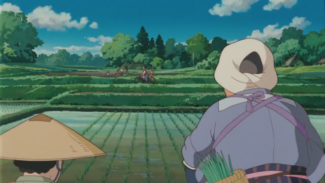
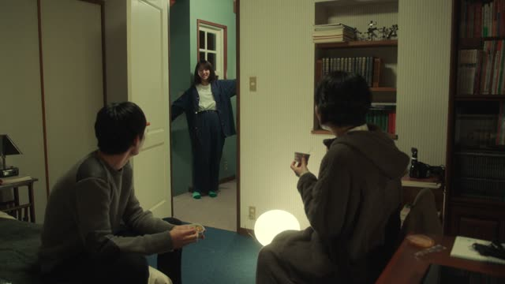

ね

My Neighbor Totoro
こんにちは！ご精が出ますね。
"Hello! Working hard, I see."
ね at the end of a sentence means "you see it too, right?". It goes on the very end, after です, ます or a plain verb or adjective.
On this card, someone greets a neighbor busy at work. It isn't news, the neighbor knows they're working hard. ね just shares the moment.
Polite: ですね / ますね. Casual: drop です, but after a noun or な-adjective add だ: 大変だね.

Shirokuma Cafe · Season 1, Episode 5
楽しそうだね
"That sounds fun, huh."
そう ("looks like") works like a な-adjective, so it gets だ before ね.
Casual, after a noun or な-adjective? Add だ first.
| Word | Add | Ending | ||
|---|---|---|---|---|
| Noun | 学生 | だ | ね | You're a student, huh. |
| な-adjective | 静か | だ | ね | It's quiet, huh. |
| Verb | 行く | – | ね | You're going, huh. |
| い-adjective | 高い | – | ね | It's expensive, huh. |
Quick Examples
You and a friend step outside. It's freezing.
寒いね
"It's cold, huh."
CasualYou're both eating the curry your friend made. It's really good.
これ、おいしいね
"This is good, isn't it."
CasualSmall talk with a neighbor while it pours outside.
よく降りますね
"It sure is raining a lot."
PoliteA coworker shows you a photo of their new apartment.
広い部屋ですね
"What a big room."
PoliteWith and without
寒い
"It's cold." Just a statement, to yourself or anyone.
寒いね
"It's cold, huh." You both feel it, and you're sharing that.
寒いよ
"It's cold, you know." They don't know yet, so you tell them (maybe they're about to go out without a coat).
広い部屋ですね
"What a big room." You're both looking at it.
Examples from Media
Midnight Diner: Tokyo Stories · Season 2, Episode 1
最低ですね。
"That's the worst."
ね: she expects the listener to agree.

Shirokuma Cafe · Episode 15
遮光器土偶ですね
"That's a dogū figurine, huh."
ですね: the polite version, both looking at the same thing.

Quartet · Episode 8
寝ますね。
"I'm going to bed, okay?"
ね after ます: letting the others know, softly.
Kotaro Lives Alone · Episode 7
そーだね。
"Yeah, true."
そうだね: agreeing.
Good Morning Call · Episode 13
優しいね。
"You're so kind."
Aggretsuko · Season 2, Episode 9
大変だね。
"That's rough."
Teasing Master Takagi-san · Season 2, Episode 9
正直だね。
"You're honest, huh."
Kekkon Dekinai Otoko · Episode 5
楽勝だね。
"That's a piece of cake."
Further Reading
A Dictionary of Basic Japanese Grammar
Entry "ne" · pp. 286–288
Tae Kim's Guide to Japanese Grammar
Adverbs and Sentence-ending particles · 「ね」 sentence ending